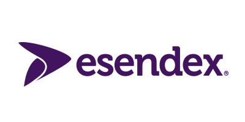

New Startup of the Year
Fresh startups (less than a year old) who are about to or have just launched a new service/product. They can pre-revenue and the emphasis here is on potential.
- Winner Cronofy (One Diary) is a platform for organising time, produced by the team at One Diary who are building tools to manage the flexible work-life balance of the 21st century.
- Call for Participants offers a global place for researchers to advertise their research and for participants to find research studies to take part in.
- LockDock (Summus) integrates into existing electronic locks, turning your smartphone into a digital key for doors, garages and gates, plus a padlock in development.
- Tickityboom make mobile games for the largest audience: women aged 35 and older. They’re developing new apps with irresistible characters and compulsive narrative hooks.
Emerging Startup of the Year
Mature startups (up to 5 years old) who have gained traction in their market and show potential for further success.
- Winner ENSEK provide analytics solutions to energy suppliers and industry participants, allowing them to manage data and use it to enable trusted and informed decision making.
- Highclere Interiors are shaking up the traditional interiors sector by combining their cozy showroom with digital tools like PatternRefernce; a wallpaper identifier.
Judging Panel
- Aamir Butt Programme Director, Next Business Generation
- Robert Cawdron Finance Growth Manager, Grant Thornton
- Aisling Duffy Head of Data Protection, Shoosmiths
- Jonathan English Managing Director, Skeleton Productions
- Andrew Porter Entrepreneur and Angel Investor
Platinum Sponsors
Providing our £1,000 cash prize awards for each of our categories and providing food and drinks on the evening.
- G2 Innovation is a design innovation consultancy thats supports businesses by providing the tools and resources that take the pain out of developing new ideas.
-  Esendex provides SMS services to thousands of businesses around the world, from retailers and financial institutions to government bodies and education providers.
- Next Business Generation is a business-accelerator programme designed to create successful start-ups in Nottingham’s digital, clean-tech and life sciences sectors.
- Creative Quarter is Nottingham’s flagship project for economic growth, enterprise and entrepreneurial spirit in and around the city’s Lace Market and Hockley areas.
Gold Sponsors
Providing services-in-kind to help the award winning businesses of each category.
- Skeleton Productions produces engaging creative videos for UK businesses and brands. They have donated an animation worth £4,000 for one of our winners.
- Shoosmiths is a major UK law firm working with startups to FTSE 250. They have donated legal advice worth £750 for one of our winners.
- Security Aware is a data security and compliance specialist, helping businesses keep information safe through monitoring, testing and training.
Silver Sponsors
Our ongoing sponsors help us get great speakers in and provide drinks at our monthly events.
-
 Paypal makes it easy for businesses to get paid. Whether you’re online or offline, in your shop or on the road, one simple PayPal account is all you need.
Paypal makes it easy for businesses to get paid. Whether you’re online or offline, in your shop or on the road, one simple PayPal account is all you need.
- First Enterprise is a leading business support organisation which supports the needs of pre-start and existing business owners in Nottingham and the East Midlands.
- JH is a web agency working with exciting clients on challenging projects. They specialise in producing attractive, effective ecommerce websites.